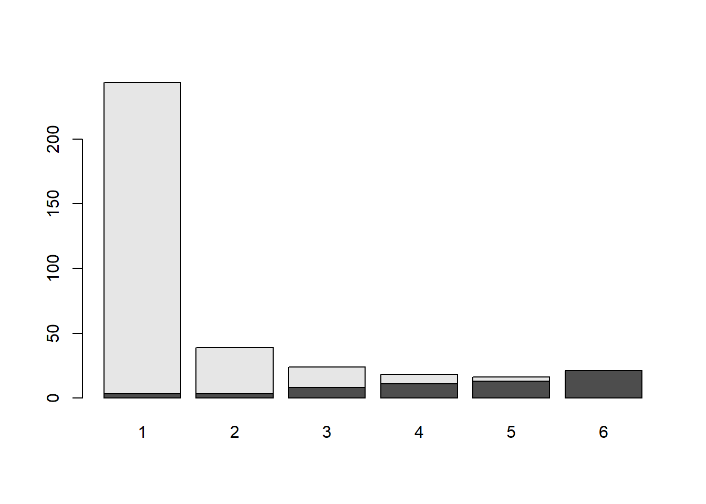
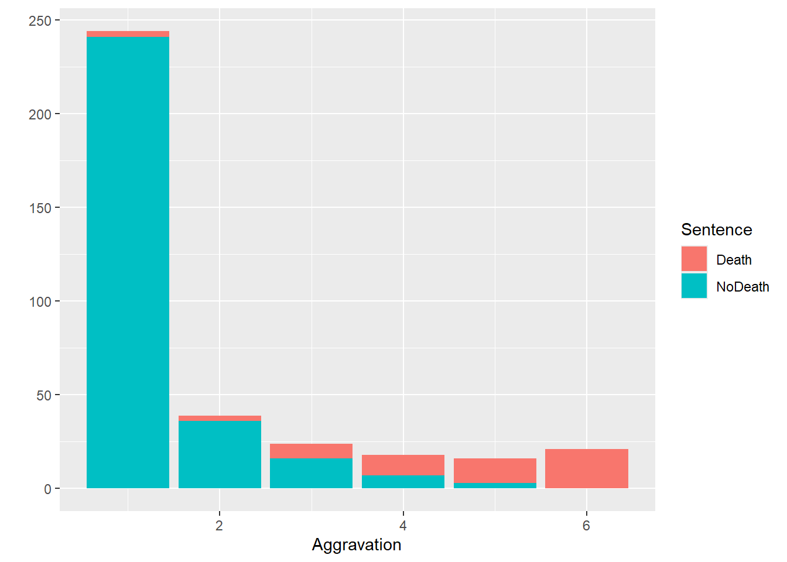
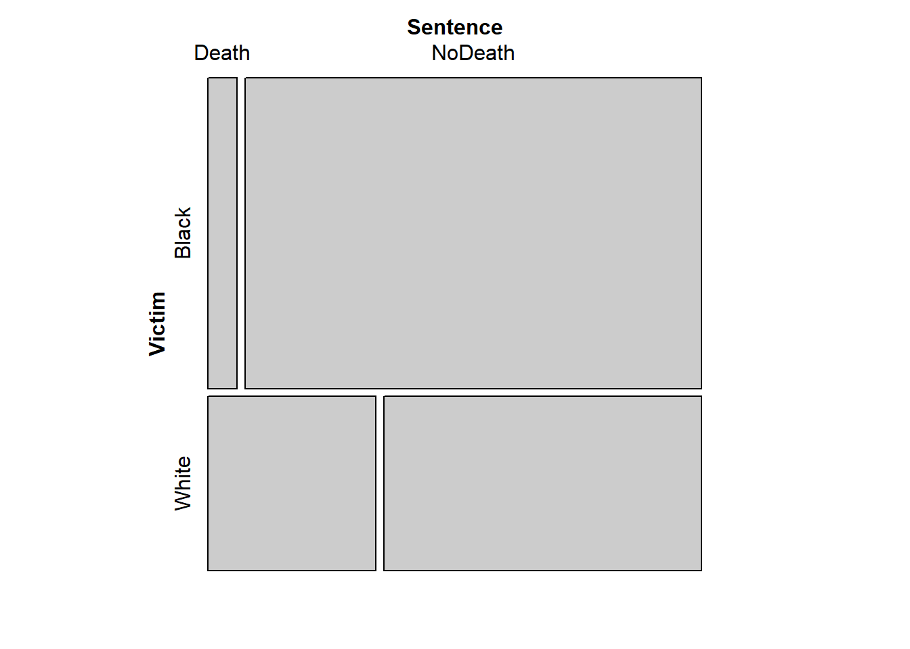
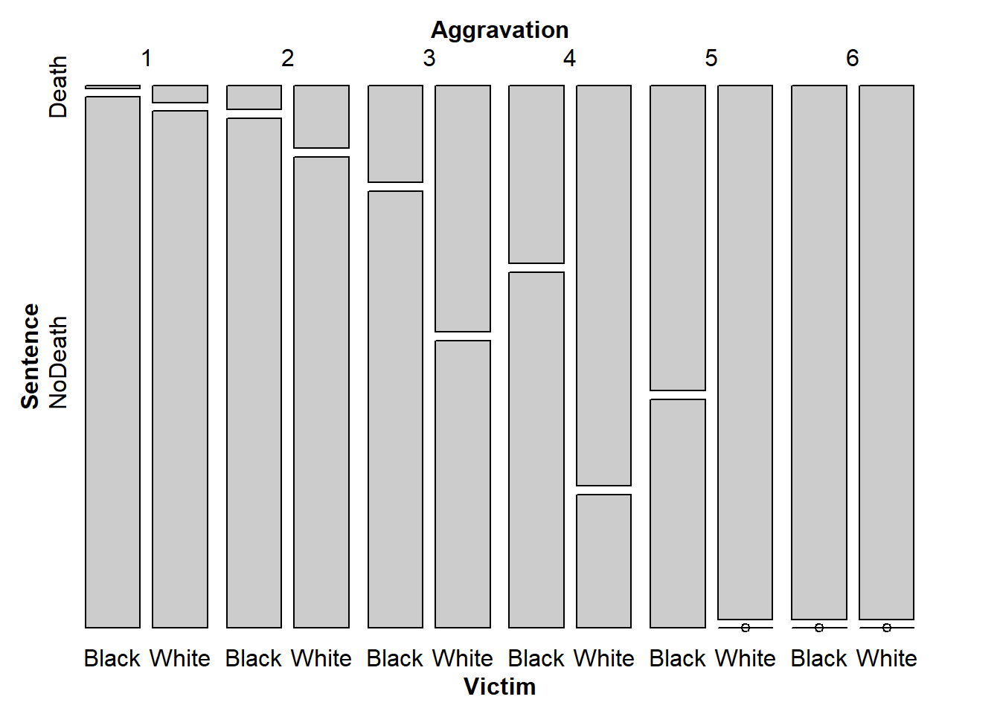
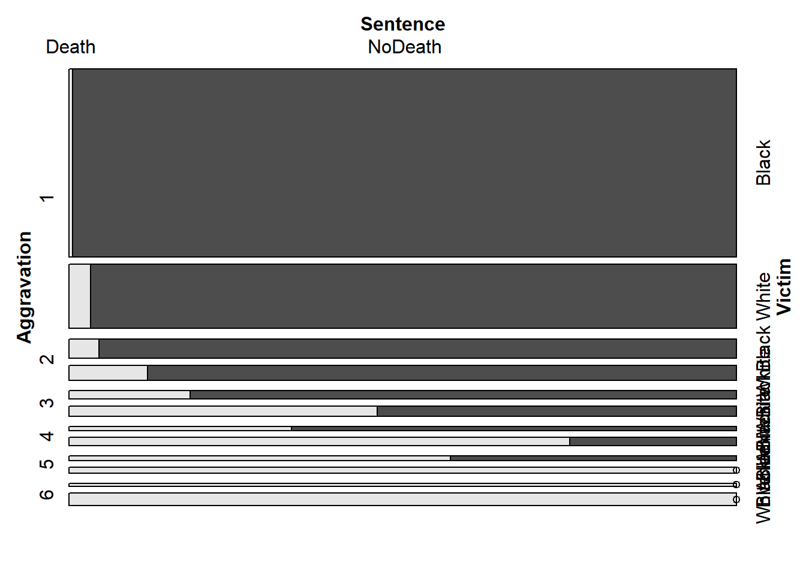
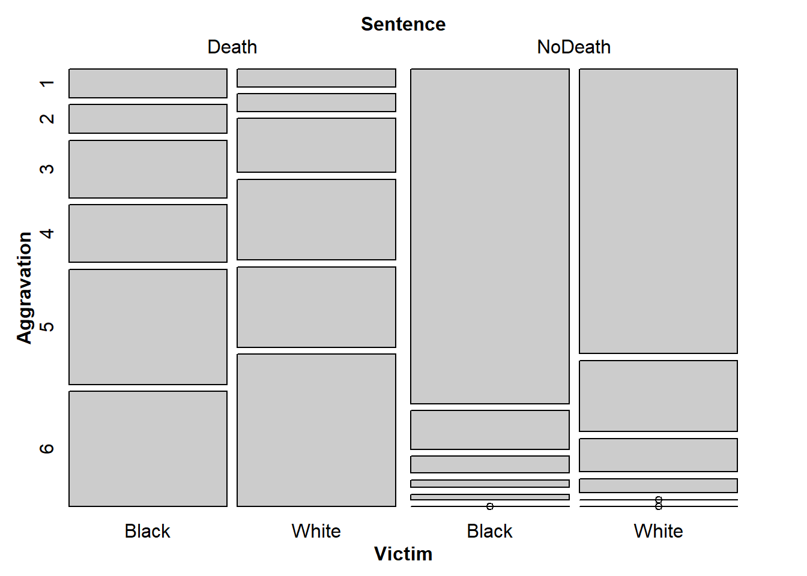

library(gnm)
library(vcdExtra)
library(Sleuth3)
library(tidyverse)1 Types of Categoricals
Lab 1
html notes
From the RMarkdown file within RStudio, you can generate an HTML version of this notebook by clicking the “Preview” icon from the menu for the current tab. The HTML preview should then appear in the RStudio Viewer pane. If it does not, check the preview settings in the dropdown menu from the gear icon adjacent to the “Preview” icon. If you prefer your HTML preview to contain code output up front, choose “Run All” from the “Run” menu in the current tab before generating the preview – otherwise you are encouraged to run each chunk as you go.
Within a code chunk, you can run the whole chunk at once using Ctrl+Shift+Enter or by clicking the green arrow icon in the upper right corner of the chunk. You can run one line at a time using Ctrl+Enter with your cursor on the specific line.
Also recall that you can fold/hide any section or subsection of the RMarkdown document using the arrow icon to the left of the section heading, or by pressing Alt+L with your cursor inside the section to be hidden. Alt+O will collapse all sections, if you prefer to open them one at a time as you work through the lab.
Keyboard shortcuts may be platform-dependent. You can check the keyboard shortcuts for your current setup through “Tools” -> “Keyboard Shortcuts Help” from the RStudio main menu bar.
If you need more reminders, please refer back to M1Lab0.Rmd.
Setup
For this lab, we’ll use the following packages, so you can go ahead and run this chunk of code (unless of course you decided to “Run All” already).
LearnR
The Big Idea
In the prerequisites to this course, you have covered some versatile methods for relating a continuous response variable to continuous or categorical predictors (i.e., linear models and ANOVA). The methods for modeling a categorical response, or exploring the relationships between multiple categorical variables, have not been similarly developed. In this course, you will move beyond basic categorical-variable techniques like the tests for one or two proportions and the chi-squared methods, and learn to build and evaluate statistical models for discrete outcomes.
This first lab does not contain any new statistical methods per se, but it will help you get comfortable with viewing and manipulating categorical data in R. At the end of this lab, you’ll apply some of the functions you have learned to answer some questions, and you’ll see how to submit your work in the form of an R Markdown document.
Factors and Levels
As you have seen in Data Analytics I, R represents categorical variables using factors. A factor is a vector equipped with a set of levels, which describes the possible values the variable can potentially take (including, but not limited to, the unique values the vector actually contains). Henceforth, we will make no distinction between the terms “categorical variable” and “factor”, or the terms “category” and “level”. The order of levels in a factor can be important in some situations – especially when making graphical displays.
Categorical Data Formats
Compared with the labs for previous courses in this sequence, these labs put somewhat more emphasis on the pre-processing stages of data analysis the stretching and squeezing and rearranging that goes into getting a data set into the right “shape” to begin an analysis. There are two reasons for this. First, now that you have seen more data and gained more experience with R, you can move on to more realistic data analysis problems. Second, such reshaping is unavoidable when working with categorical data. Often categorical data arrives pre-aggregated. The number of variables, number of levels, or number of observations may be implicit or obscure. The analyses you want to perform may require that the data be arranged differently from how they arrived.
Manipulating categorical data sometimes appears trivial right up until the point where you give up in frustration! Familiarizing yourself with the formats described in this section should help. We’ll first illustrate each format in the context of a toy data set, then practice manipulating some real data.
Formats
Case Format
This familiar format, applicable to both continuous and categorical data, is what R for Data Science calls “tidy data” (see vignette('tidy-data') for much more on this idea). The data are arranged in an n x p rectangular array (e.g. a data frame), where n is the number of observations and p the number of variables. That is, there is one observation per row and one variable per column. This is a good starting point for most analyses.
X <- data.frame(
V1 = c('Up', 'Up', 'Down', 'Down', 'Up', 'Up'),
V2 = c('Left', 'Left', 'Right', 'Right', 'Left', 'Right'),
V3 = c('B','B','A','B', 'A', 'B'))
X| V1 | V2 | V3 |
|---|---|---|
| Up | Left | B |
| Up | Left | B |
| Down | Right | A |
| Down | Right | B |
| Up | Left | A |
| Up | Right | B |
How many variables are in
X? How many observations?
3
The case or “tidy” format is fully general it’s applicable to data sets consisting of (complete) observations on any combination of continuous and/or categorical variables. In contrast, the next two formats are specific to data sets where all the variables are categorical (or where any continuous variables can be ignored or discretized).
Frequency Format
In this format, the data are still arranged in a 2-D rectangular array, but with the number of rows equal to the number of combinations of factor levels, and the number of columns is p + 1. The extra column (typically the last) contains the counts, or frequencies, observed at each of the possible combinations of factor levels.
library(kableExtra)
X %>% table %>% as.data.frame |>kbl() |>
kable_styling(bootstrap_options = "striped", full_width = F, position = "left") | V1 | V2 | V3 | Freq |
|---|---|---|---|
| Down | Left | A | 0 |
| Up | Left | A | 1 |
| Down | Right | A | 1 |
| Up | Right | A | 0 |
| Down | Left | B | 0 |
| Up | Left | B | 2 |
| Down | Right | B | 1 |
| Up | Right | B | 1 |
# don't worry about this code for nowNotice that I used the pipe operator in this last R chunk to first perform the table() function on X and then perform the as.data.frame() function on that. The equivalent, nested functions are shown in the table below. Please refer back to M1Lab0.Rmd to learn more about the pipe operator.
Can you see why there are 8 rows in this display? Think about the number of levels for each of the three categorical variables.
the number of combinations of factor levels
Tabular Format
In this format, the data are arranged in a p-dimensional array of frequencies, where p is the number of variables. The dimensions of the array are the number of factor levels for each variable. The elements in the array are the observed frequencies at each of the possible combinations of factor levels.
X_tab <- table(X)Observe that since there are a 3 variables in X, the table object is a 3-dimensional array.
## Dimensions of the 3-dimensional array that contains the frequencies of the factor-level combinations of the 3
# variables in `X`.
(dims <- dim(X_tab))[1] 2 2 2# This is why there are 8 rows in the frequency table
prod(dims)[1] 8X <- data.frame(
V1 = c('Up', 'Up', 'Down', 'Down', 'Up', 'Up'),
V2 = c('Left', 'Left', 'Right', 'Right', 'Left', 'Right'),
V3 = c('B','B','A','B', 'A', 'B'))
X| V1 | V2 | V3 |
|---|---|---|
| Up | Left | B |
| Up | Left | B |
| Down | Right | A |
| Down | Right | B |
| Up | Left | A |
| Up | Right | B |
X_tab <- table(X)
# 2-D slices of 3-D table
X_tab, , V3 = A
V2
V1 Left Right
Down 0 1
Up 1 0
, , V3 = B
V2
V1 Left Right
Down 0 1
Up 2 1Since this table is a 3-D object, trying to print it to the 2-D screen disassembles it. You’ll see much more on this issue in later sections. The R terminology makes no distinction between the multidimensional table and its 2-D representation both are “tables”. When confusion may arise between these concepts later on, I will generally refer to the higher-dimensional object as a (tabular) array and a 2-D view of it as a (tabular) display.
Converting Between Formats
The table below lists some functions you can use to convert between each of these three standard categorical data formats. In practice, there are other possible formats this does not cover every possible arrangement but many categorical data sets will resemble one of these forms. You are not expected to be familiar with these functions already this table is just a reference. In the next section, we will illustrate some of these transformations using a real data set, one which begins in a less-standard format (i.e., not one of case, frequency, or tabular format).
| Convert: Row to column | Case form | Frequency form | Tabular form |
|---|---|---|---|
| Case form | N/A | as.data.frame(table(X)) | table(X) or xtabs( ~ V1 + V2 +…+ Vp, X) |
| Frequency form | expand.dft(X) | N/A | xtabs(Freq ~ V1 + V2 +…+ Vp, X) |
| Tabular form | expand.dft(X) | as.data.frame(X) | N/A |
In the table above, X is a data frame/table, V1,…,Vp are variable columns, and Freq is a column of counts.
Note: when considering a single factor, frequency format and table format are the same. When there are no other variables to combine, the counts at each “combination” of levels of every variable (frequency format) is simply the count at each level of the one variable (table format).
Dataset: Race and the Death Penalty
For the remainder of this lab, we will work with the death penalty data in case1902 from the Sleuth3 package. These data come from a study embedded in an extensive literature on racial patterns in death sentencing. Other studies have examined whether black felons are more likely to receive the death penalty than white felons for comparable crimes. This study restricted attention to black murderers, asking whether blacks were more likely to be sentenced to death for murdering whites than for murdering other blacks, even when the crimes were otherwise comparable. Take a look at the data, and read the documentation in the help file.
penalty <- case1902
penalty| Aggravation | Victim | Death | NoDeath |
|---|---|---|---|
| 1 | White | 2 | 60 |
| 1 | Black | 1 | 181 |
| 2 | White | 2 | 15 |
| 2 | Black | 1 | 21 |
| 3 | White | 6 | 7 |
| 3 | Black | 2 | 9 |
| 4 | White | 9 | 3 |
| 4 | Black | 2 | 4 |
| 5 | White | 9 | 0 |
| 5 | Black | 4 | 3 |
| 6 | White | 17 | 0 |
| 6 | Black | 4 | 0 |
str(penalty)'data.frame': 12 obs. of 4 variables:
$ Aggravation: int 1 1 2 2 3 3 4 4 5 5 ...
$ Victim : Factor w/ 2 levels "Black","White": 2 1 2 1 2 1 2 1 2 1 ...
$ Death : int 2 1 2 1 6 2 9 2 9 4 ...
$ NoDeath : int 60 181 15 21 7 9 3 4 0 3 ...Example: Reformatting the penalty Dataset
The format of the penalty data does not quite fit into any of the three categories described above, this is something like a “flat table”. The biggest difference here is that the levels of one of the factors, let’s call it “Sentence”, have been split into two columns – “Death” and “NoDeath.” Later we will see how to produce a flat table from a tabular array, but for now we will see how to transform these data into one of the standard formats.
Frequency Format
Let’s see if we can first get these data into frequency format. This means figuring out what the variables are, and putting each variable into its own column. The key thing to notice is that the actual unit of observation is the post-conviction sentencing decision for a single murder trial, and the outcome of sentencing from a single conviction can be either Death or NoDeath. That is, as we mentioned above, Death and NoDeath are not separate, logically-independent variables, when measured at the level of individual murder trials, but are two levels of the same (as yet unnamed) variable.
tidyr to the rescue:
You use pivot_longer() when you notice that you have columns that are not variables, but rather levels of a single variable.
We’ll use pivot_longer() to collapse the Death and NoDeath columns into a new column named Sentence.
penalty_freq <- pivot_longer(
data = penalty,
cols = c("Death", "NoDeath"), names_to = "Sentence", values_to = "Freq", cols_vary = "slowest")
# cols_vary = "slowest" keeps individual columns from cols close together in the output.
# Here, this keeps the data ordered by Aggravation.Observe how the data in each row of penalty takes up two rows in penalty_freq (namely, rows 1 and 13).
penalty[1,]| Aggravation | Victim | Death | NoDeath |
|---|---|---|---|
| 1 | White | 2 | 60 |
penalty_freq[c(1,13),]| Aggravation | Victim | Sentence | Freq |
|---|---|---|---|
| 1 | White | Death | 2 |
| 1 | White | NoDeath | 60 |
You can View() penalty_freq to check that it looks like it should.
Case Format
Now suppose we want to see all the individual observations, each trial on a separate row. Referring to the table of conversion functions, we can use expand.dft() to get from a frequency format to a case format.
# the other functions in that table are available in base R, but expand.dft() is from vcdExtra.
penalty_case <- expand.dft(penalty_freq)
head(penalty_case)| Aggravation | Victim | Sentence |
|---|---|---|
| 1 | White | Death |
| 1 | White | Death |
| 1 | Black | Death |
| 2 | White | Death |
| 2 | White | Death |
| 2 | Black | Death |
# Add {r} after backticks to make executable, or just type this command in the console.
View(penalty_case)When expanded to case format, there are 362 rows (observations) and 3 columns (variables). Note that from case format, we could encode the categorical variables using binary indicators. Each categorical variable takes two possible values, so we only need one binary indicator for each.
penalty_indicators<- mutate(penalty_case, .keep = "none",
Aggravation = Aggravation,
White = ifelse(Victim == "White", 1, 0),
Death = ifelse(Sentence == "Death", 1, 0))
# another binary encoding: model.matrix( ~ Sentence + Victim + Aggravation, data = penalty_case)
head(penalty_indicators)| Aggravation | White | Death |
|---|---|---|
| 1 | 1 | 1 |
| 1 | 1 | 1 |
| 1 | 0 | 1 |
| 2 | 1 | 1 |
| 2 | 1 | 1 |
| 2 | 0 | 1 |
Typically we will leave the indicator variables behind the scenes, where they will be created as needed by modeling functions. If you want to see what this looks like, you can produce an explicit indicator-encoding for a whole data frame at once, without writing out a page of if-else statements, using the model.matrix() function.
Tabular Format
Starting from either the frequency or case format, we can create a variety of tabular structures using table() or xtabs(). I find the xtabs() interface more convenient. With a minor change in the formula specification, xtabs() can tabulate either case form or frequency form data.
To tabulate frequency-format data, write the name of the frequency column on the left-hand side of the formula, and the other variables on the right-hand side. For case-format data, leave the left-hand side of the formula empty.
# The following are equivalent:
penalty_tab <- xtabs(~ Sentence + Victim + Aggravation, penalty_case)
# penalty_tab <- xtabs(Freq ~ Sentence + Victim + Aggravation, penalty_freq)Understanding the tabular form is very important when dealing with categorical data. The next section treats tabular data with more depth.
Working with Tabular Data
The penalty data has 3 variables, so a complete tabulation produces a 3-D array. The “spatial orientation” of this array depends on the order of the variables on the right-hand side of the xtabs() formula:
xtabs(~ Sentence + Victim + Aggravation, penalty_case) %>% dim[1] 2 2 6xtabs(~ Sentence + Aggravation + Victim, penalty_case) %>% dim[1] 2 6 2Instead of rearranging the formula, we can “rotate” the array using aperm() (“array permutation”).
aperm(penalty_tab, perm = c(1, 2, 3)) %>% dim[1] 2 2 6# the 2nd and 3rd dimensions switched places -- we've turned the array on its end
aperm(penalty_tab, perm = c(1, 3, 2)) %>% dim [1] 2 6 2So far we still haven’t shown the tabular array we’ve built! Displaying a table with three or more dimensions on a 2-D computer screen (or page) takes a little thought. There are two main ways to reduce the dimension of an array we can condition (“slice”) or marginalize (“squash”).
Conditioning
In general, to slice an n-dimensional array into m-dimensional pieces, we must fix “condition on” each of the possible values of the other n - m variables. For penalty_tab, we can get 2-D slices by conditoning on just one other variable. Let’s try this with Sentence as the conditioning variable the relevant function is co_table() (“condition table”). Based on the table dimensions we just saw, this should create two 2-D (2x6) slices.
(penalty_given_sentence <- co_table(penalty_tab,'Sentence'))$Death
Aggravation
Victim 1 2 3 4 5 6
Black 1 1 2 2 4 4
White 2 2 6 9 9 17
$NoDeath
Aggravation
Victim 1 2 3 4 5 6
Black 181 21 9 4 3 0
White 60 15 7 3 0 0Conditioning preserves all of the information in the array. We can display the whole tabular array by laying out each slice end to end. The slices are named by the levels of the conditioning variable, and naming a particular level returns that slice:
penalty_given_sentence$Death Aggravation
Victim 1 2 3 4 5 6
Black 1 1 2 2 4 4
White 2 2 6 9 9 17Of course, if you condition on two out of three variables at once (using a vector of conditioning variables) you’ll get 1-D slices, and conditioning on all three variables cuts up the table into all of its individual frequency components. In higher-dimensional tables this will be different. For instance, if we started with a 6-D table, conditioning on three variables would return 3-D slices. You are welcome to play around with using the death penalty data and see what weirdness you can produce!
We can arrange 2D array slices into a single tabular display by using ftable() (“flat table”) or structable(). Both of these functions can take an existing table object as input, or create new tables directly from data using a formula interface.
Here’s an example with pre-tabulated data from above:
penalty_tab %>% aperm(c(3, 1, 2)) %>% ftable Victim Black White
Aggravation Sentence
1 Death 1 2
NoDeath 181 60
2 Death 1 2
NoDeath 21 15
3 Death 2 6
NoDeath 9 7
4 Death 2 9
NoDeath 4 3
5 Death 4 9
NoDeath 3 0
6 Death 4 17
NoDeath 0 0And here’s an example of the formula interface for structable() and ftable(), which is somewhat different from the xtabs() formula interface (because it’s intended to produce a different kind of object), but still quite intuitive.
The following tables are fairly wide, so to view them in the R Markdown file, you’ll have to expand the width of the source pane (or, you could click Preview and see the table in the Viewer pane, which you may also have to widen!).
ftable(Aggravation + Victim ~ Sentence, penalty_case) Aggravation 1 2 3 4 5 6
Victim Black White Black White Black White Black White Black White Black White
Sentence
Death 1 2 1 2 2 6 2 9 4 9 4 17
NoDeath 181 60 21 15 9 7 4 3 3 0 0 0structable(Sentence + Aggravation ~ Victim, penalty_case) Sentence Death NoDeath
Aggravation 1 2 3 4 5 6 1 2 3 4 5 6
Victim
Black 1 1 2 2 4 4 181 21 9 4 3 0
White 2 2 6 9 9 17 60 15 7 3 0 0You can see that the variables on right hand side of the formula control the recursive column splits, and the variables on the left hand side control the recursive row splits (variable order matters on both sides).
Analogous to the way that the table orientation defined by the order of an xtabs() formula can be “rearranged” with aperm(), a structable()’s split orientation can be “rearranged” using the direction argument:
penalty_tab %>% aperm(c(2, 1, 3)) %>% structable(direction = c("v", "v", "h")) Victim Black White
Sentence Death NoDeath Death NoDeath
Aggravation
1 1 181 2 60
2 1 21 2 15
3 2 9 6 7
4 2 4 9 3
5 4 3 9 0
6 4 0 17 0Try playing with the order of dimensions and/or directions of table splits in the
structable()call until you get a flat display arranged like the originalcase1902data frame.
Marginalizing
In addition to slicing the tabular array, we can also squash it by summing across one or more dimension(s). We can do this simply by omitting from the xtabs() formula specification the variables we wish to collapse along.
xtabs(~ Victim + Sentence, penalty_case) # collapse along Aggravation axis Sentence
Victim Death NoDeath
Black 14 218
White 45 85xtabs(~ Sentence, penalty_case) # collapse along Aggravation and Victim axesSentence
Death NoDeath
59 303 Alternatively, starting with a complete array, we can collapse it using margin.table(). As with the formula specification above, omitted variables get collapsed.
margin.table(penalty_tab, margin = c(1,2)) Victim
Sentence Black White
Death 14 45
NoDeath 218 85# penalty_tab was defined with the formula ~ Sentence + Victim + Aggravation. Sentence and Victim, as the first two variables in the formula, will be retained, while Aggravation will get squashed. # Aggravation is the 3rd variable in the formula, so here it will be retained while `Victim` and `Sentence` get squashed.
margin.table(penalty_tab, margin = c(3))Aggravation
1 2 3 4 5 6
244 39 24 18 16 21 margin.table(penalty_tab) with no other arguments predictably returns the table total. All variables are omitted, so all dimensions are collapsed.
We’ve been talking about “collapsing” tables, and somewhat confusingly there is a function named collapse.table(), that behaves slightly differently. Instead of squashing omitted dimensions flat, it shortens a specified dimension by reducing the number of factor levels along that axis. Say we want a table where Aggravation levels 1-3 are grouped together as “Low” and levels 4-6 “High”. Without editing the original data, we could use collapse.table():
penalty_tab %>% collapse.table('Aggravation' = c(rep("Low", 3), c(rep("High", 3)))), , Aggravation = Low
Victim
Sentence Black White
Death 4 10
NoDeath 211 82
, , Aggravation = High
Victim
Sentence Black White
Death 10 35
NoDeath 7 3Tables of Proportions
From a table of counts, we often wish to make a table of proportions or percentages, where the proportions may be taken with respect to rows, columns, tables, etc.
# Table of counts
(sentence_victim_tab <- margin.table(penalty_tab, margin = c(1,2))) Victim
Sentence Black White
Death 14 45
NoDeath 218 85# Table of proportions
prop.table(sentence_victim_tab) %>% round(2) # rounding all proportions to 2 decimal points to avoid visual clutter Victim
Sentence Black White
Death 0.04 0.12
NoDeath 0.60 0.23The proportions above are taken with respect to the whole table. We’re actually more interested in the proportions of Death Sentences within each Victim level:
# Table of column proportions
col_prop_tab <- prop.table(sentence_victim_tab, margin = 2)
col_prop_tab %>% round(2) Victim
Sentence Black White
Death 0.06 0.35
NoDeath 0.94 0.65# Table of column percents
100 * col_prop_tab %>% round(3) Victim
Sentence Black White
Death 6.0 34.6
NoDeath 94.0 65.4Visualizing Categorical Data
In earlier stats courses, you’ve no doubt seen barcharts for categorical data. You can get regular or stacked barcharts for 1 or 2 variables respectively using barplot() on a table object:
barplot(xtabs(~Sentence + Aggravation, penalty_case))
or with qplot(geom = "bar") on a data frame of cases.
qplot(data = penalty_case, x = Aggravation, fill = Sentence, geom = "bar")Warning: `qplot()` was deprecated in ggplot2 3.4.0.
Another very useful graphic is the mosaic plot, which can take as input either a table, or the xtabs() formula that would produce a table.
mosaic(~ Victim + Sentence, penalty_case)
In this plot, the proportion in each cell of the table is represented by the area of the corresponding rectangle. The proportion of Victims who were black vs white is represented by the relative heights of the upper vs. lower sets of rectangles, and the widths of each rectangle represent the proportions of Sentences within each victim category. This plot makes clear that death sentences were more likely to be given for murders of whites, when not accounting for Aggravation.
We can actually extend the mosaic plot to show the third dimension as well, using a conditioning approach. Consider the flat table produced by the following R chunk (widen panes as needed for full view):
flat_table <- xtabs(~ Sentence + Victim + Aggravation, penalty_case) %>%
prop.table(margin = c(2, 3)) %>%
aperm(c(3,2,1)) %>%
structable(direction = c("v","v","h"))
flat_table %>% round(2) Aggravation 1 2 3 4 5 6
Victim Black White Black White Black White Black White Black White Black White
Sentence
Death 0.01 0.03 0.05 0.12 0.18 0.46 0.33 0.75 0.57 1.00 1.00 1.00
NoDeath 0.99 0.97 0.95 0.88 0.82 0.54 0.67 0.25 0.43 0.00 0.00 0.00# You may want to make a new chunk wherein you can unpack this code a bit, and take a look at some of the intermediate objects. I find this particular code it somewhat obnoxiously convoluted, because prop.table() doesn't operate correctly on flat tables. This requires the marginal proportions to be calculated from the regular table, *then* passed as such into structable()/ftable() to be flattened for display.
# If you can find a nicer way to make this flat table, I'd like to see it!And now, you can look at a mosaic plot of that flat table. This is a visual representation of the proportions in the flat table.
mosaic(flat_table)
From this plot, there’s evidence that across levels of Aggravation, the racial disparity in sentencing remains, at least in this sample of murder trials. You can see this by considering the two vertical bars that correspond to each aggravation level. If sentencing did not differ based on race (given aggravation level), then the splits between Death and NoDeath should be at the same height for both Black and White victims. You might wonder if this disparity that we see is larger than we could reasonably expect to observe by chance in a sample of 362 murder trials. We will begin to address these types of questions in the following lab, where we will explore statistical tests of association for categorical variables.
Open question: It is not obvious that prop.table(margin = c(2,3)) represents the only “correct” set of proportions for answering looking at whether the racial effect on sentencing persists after accounting for aggravation. Can you think of a different set of proportions that might also address this?
Functions
Basic Functions for One Categorical Variable
- factor() creates a factor from a vector.
- levels() accesses the possible values of a factor.
Functions for Creating/Transforming Tables
- table() creates a table of counts from a factor (or collection of factors).
- xtabs() creates a contingency table out of factors in a data frame, using a formula interface.
- ftable() creates a flat table by adjoining separate slices of a high-dimensional tabular array.
- aperm() “rotates” a tabular array by permuting its dimensions
- structable() is like ftable() but with more more control of the orientation of the table displayed.
- prop.table() turns a table of counts into a table of proportions (with respect to rows, columns, tables, etc.).
- margin.table() collapses a table by aggregating over every level of one (or more) of the factors.
- collapse.table() lumps together some levels of one (or more) factors in a table, reducing “resolution” of that factor.
- co_table() makes slices of a table conditional on one or more factors.
Functions for Plotting Tabular Data
- barplot() creates a (stacked) bar chart from a 1- or 2-dimensional table.
- mosaic() creates an area-plot from a table or flat table.
Lab Assignment
Instructions
For this assignment, you are asked to create a self-contained R Markdown script that can generate a document which answers the questions below. You will submit the .Rmd script, and you will be graded based on the HTML document that it generates.
R Markdown for submission
The following describes the process of creating and submitting .Rmd and .pdf files as your lab assignment. You will follow this procedure after each lab in this course.
NOTE: If you are reading these instructions from the HTML preview in the Viewer pane, they will be overwritten in the following steps. You can avoid this by “popping out” the current HTML preview into an external browser window, by clicking the the “Show in new window” icon (to the right of the broom icon in the Viewer pane).
Alternatively, you can read the instructions right from the .Rmd script, keeping in mind that you will need to switch back to the lab script tab to view the rest of the instructions once you create a new script. You could also copy and paste the whole Lab 1 Assignment Instructions section into your new document while you’re working on it, and then delete the instructions before you submit it.
Click “File” -> “New File” -> “R Markdown”, and dialog box will pop up. Change the title to “Lab Assignment 1” and name yourself as author. Select PDF as the Default Output Format, then click OK. The header of your new file should look something like this:
---
title: "Lab Assignment 1"
author: "Ronald Fisher"
date: "2024-04-07"
output: pdf_document
---
The file will initially contain some examples to get you started with RMarkdown, which you should replace with your lab content. Save the notebook as something like “Lab_Assignment_1” using “File” –> “Save As…”
In your new .Rmd script, answer the questions in the “Questions” section below. Include all the code you need to produce the requested outputs. Your script should include a top-level section heading for each question, for example:
# Question 1
stuff here
# Question 2
other stuffWhether or not you include the text of the questions in your script is up to you.
Do be sure to include, near the top of your script, a code chunk that loads any non-default packages you use (such as vcdExtra or Sleuth3).
Within the question sections, you can chunk your code in whatever way seems reasonable. Incorporate any written answers outside the code chunks using Markdown formatting as needed (see “Help” -> “RMarkdown Quick Reference” for text formatting help).
To ensure that your .Rmd script will be fully self-contained (i.e. it will not depend on objects that were defined during the lab, and could be run as-is if you sent it to someone else), you should clear the workspace before you begin.
To clear the workspace, click the broom icon in the Environment pane.
Once you’ve answered the questions in your new .Rmd script and you have verified your code is self contained, you should Run -> Run All Chunks and generate a .pdf file of your document, to check that everything looks like you want it to. Having concluded that your .Rmd script produces a pdf document that includes all the output you want, submit both the Lab_Assignment_1.Rmd file and the pdf document on Canvas as your Lab Assignment 1.
Feel free to post on the discussion board if you have any questions or encounter any difficulties with this process.
Questions:
Q1.
Produce a flat table
Starting from the case1902 data file in the Sleuth3 package, produce a flat table With Aggravation level as the rows, with Death/NoDeath as the two wide columns that contain Black/White within them. The skeleton of your table should look like:
| . | Death | NoDeath | ||
|---|---|---|---|---|
| . | Black | White | Black | White |
| 1 | . | . | . | . |
| 2 | . | . | . | . |
| 3 | . | . | . | . |
| 4 | . | . | . | . |
| 5 | . | . | . | . |
| 6 | . | . | . | . |
library(Sleuth3)
library(tidyverse)
library(kableExtra)df <- case1902
df2 <- df |> pivot_longer(
cols = c("Death", "NoDeath"),
names_to = "Sentence",
values_to = "Freq",
cols_vary = "slowest") |>
expand.dft()
ftable(Sentence + Victim ~ Aggravation, df2) Sentence Death NoDeath
Victim Black White Black White
Aggravation
1 1 2 181 60
2 1 2 21 15
3 2 6 9 7
4 2 9 4 3
5 4 9 3 0
6 4 17 0 0Q2.
Create a mosaic plot of the flat table
- Create a mosaic plot of the flat table you produced in question 1.
- Are there problems with your plot?
- Is it easy to understand?
You are welcome to play around with making it more interpretable and/or visually appealing, but that’s optional for this assignment.
Answer
ftable(Sentence + Victim ~ Aggravation, df2) Sentence Death NoDeath
Victim Black White Black White
Aggravation
1 1 2 181 60
2 1 2 21 15
3 2 6 9 7
4 2 9 4 3
5 4 9 3 0
6 4 17 0 0mosaic(Sentence + Victim ~ Aggravation, df2)
flat_table <- xtabs(~ Aggravation + Victim + Sentence, df2)%>%
prop.table(margin = c(2, 3)) %>%
aperm(c(3,2,1)) %>%
structable(direction = c("v","v","h"))
mosaic(flat_table)
b
Black/White, Death NoDeath are easy to understand, but Aggravation isn’t. At least it isn’t apparant what that means.
c
I think the plot is easy to read, with the exception that I don’t know what aggravation means.